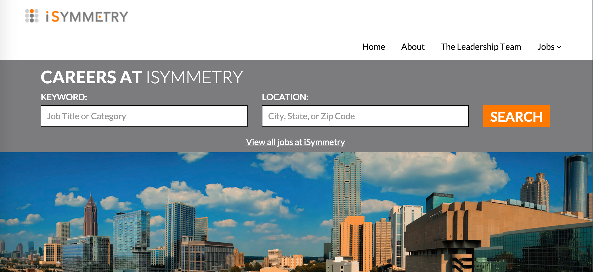

PROBLEM
Talent Stream Engage clients we unhappy with the template choices provided to them because content was not very customizable and the design did not allow enough flexibility to meet companies brand standards. These issues caused many clients to end high value contracts with CareerBuilder because the product did not meet their expectations and needs.
*Talent Stream Engage is a customizable career site product that CareerBuilder sells to enterprise clients.
SOLUTION
Design a template that allows for clients to have customizable content and design options while providing a simple and clean user experience for job seekers using the site.
PROCESS
As a first step for evaluating the design of a new template, we sat down with several clients on the current Talent Stream Engage template from the US and UK to better understand what their pain points were. We spoke to both current and previous clients who may have left us due to issues with the product. In these sessions, we asked both opinion and metric based questions. For this discovery process, we spoke to approximately 10-15 different clients ranging in size and contract value. These sessions revealed that many clients were not as unhappy with the product as they were with the expectation set when they were sold the product. Through our discovery, we revealed the product simply did not meet the standards they were sold.
To solve for the issue of unmet standards, we met with product to create a best practices and expectations guide to be shared with the sales and customer support staff. Our product designer spearheaded this initiative and created an internal portal where this information was made easily accessible.
Besides these unmet standards, we also revealed a number of design and content requests that could easily be implemented on the site and not greatly effect the overall user experience. I worked with the product’s designer to create a list of content features and design options that could be tested via usability study or A/B testing. Many small design requests, such as placement of search bar within the header, were tested via A/B testing to gather impact metrics. We also put these new design in-front of job seekers using the original template as the control. For many of the design requests, we found the new changes did not impact any metric nor matter that much to the job seekers, making these changes a easy win for the product.
We also took this time to improve the templates overall look and feel and you can see in the photos. In all, we were able to speak to ~50 job seekers in the US and UK about the proposed design and content changes.
FINDINGS/OUTCOMES
Once the new template was rolled out to clients and informational portal released to internal employees, we saw overall satisfaction with the product increase. Not only were we able to provide simple solutions for issues that were once perceived as deal breakers for our clients, but we were also able to attract new clients who did not consider this product as an option before. Now clients have an option between the two templates, and we were able to create a pricing system for each. To date, this product is the most profitable for the company (94%.)
In the months following the release of the new template, we have not detected any drop in value for the job seeker. We are tracking these metrics with Google Analytics and Usabilla.
- Time Frame
- February 2015 - June 2015
- Role
- Principal Researcher
- Research Coordinator
- User Recruiter
- Project Type
- Collaborative
PROJECT DETAILS